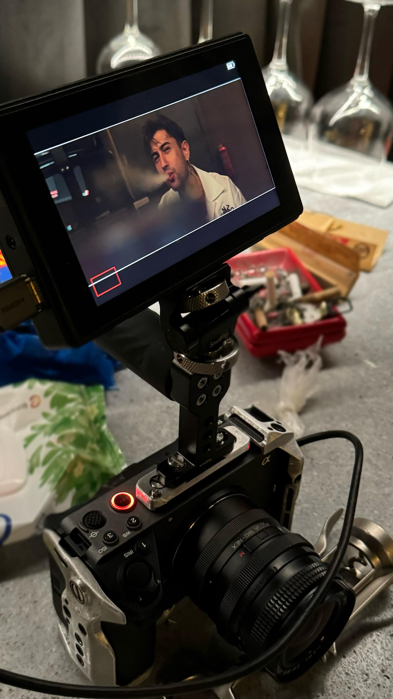

Bküa'nın yaratıldığı o gün... Sen olmasan şarkı asla böyle olamazdı. O gün ilk defa senin şarkıların prodüksiyon tarafında da ne kadar etkili olduğuna şahit olmuştum. Bi de exin tarafından basılmıştık tabi o yüzden komik bi gündü sdhhsfgshsd
Mert'in doğum gününü kutlamak için rakıya gitmiştiniz, biz seninle gün içinde sürekli konuşmuştuk zaten. Sonra maltepeye takılmaya dönmüştünüz sen de beni çağırmıştın. O gün elinden cigarayı aldırma bahanesiyle ilk defa kendini öptürdün.. yanağa minik bir busecikk 😌 (çok sarhoştun aşkım hatırlamıyosan şaşırmam valla)
